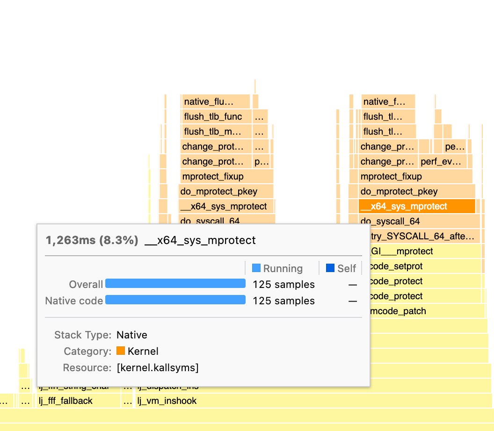

Optimizing mprotect in LuaJIT with pkeys (Memory Protection Keys)
Tags: low-level
LuaJIT is a just-in-time compiler for the Lua programming language. Just-in-time compilers generate machine code at runtime. This can make just-in-time compilers a target for attackers – if an attacker can overwrite the machine code with their own can cause arbitrary code execution. This sort of overwriting can occur either due to a flaw in the JIT compiler itself or due to memory safety errors in other code.
For this reason, modern JITs adhere to a W^X policy: a page is allowed to be either writable (W) or executable (X) but not both. First, the page is marked writable but not executable, and the JIT writes the machine code. Then, the page is marked non-writable and executable, to prevent the code from being written again. This can prevent exploitation for certain classes of errors, although it is not flawless.
Unfortunately this sort of protection can be quite slow, especially in
cases where the JIT is very active. Changing the page permissions on
Linux is done via mprotect(2). This in turn requires
invalidating an entry in the Translation Lookaside Buffer (TLB), which
can be quite slow.
Here is a flamegraph for the fasta benchmark of the lua_benchmarking
suite. As you can see we spend around 15% of our time in just mprotect!

We’ll see that we can mostly remove this overhead, in addition to gaining some security benefit. A couple of benchmarks will improve by 10%, but our average improvement ends up being a modest but respectable 1.1% (geometric mean). The techniques here can easily be adapted to other JITs.
What are pkeys (Memory Protection Keys)?
pkeys (also known as Intel Memory Protection Keys) are an extension to the existing permission system. pkeys let us change permissions without requiring modification of the page tables.
The basic idea is simple:
- Users can attach a pkey to a page. Access to the page is only permitted if the thread sets the correct pkey. Users can also selectively enable certain pkey permissions (e.g., allow read but not write).
- On the hardware level, pkeys only restrict permissions from the
underlying page. Confusingly at the software API level,
pkey_mprotect(2)can both change the permissions of the underlying page and attach a pkey to the page, so it may appear to be adding permissions even though it is not.
Here is a little example showing how to use pkeys on Linux:
#define _GNU_SOURCE
#include <stdio.h>
#include <stdlib.h>
#include <sys/mman.h>
#define SZ 4096
int main(int argc, char *argv[]) {
// Create a page with no permissions.
int *p = mmap(NULL, SZ, PROT_NONE,
MAP_PRIVATE | MAP_ANONYMOUS, -1, 0);
if (p == MAP_FAILED) { perror("mmap"); exit(1); }
// Allocate a pkey.
int pkey = pkey_alloc(0, PKEY_DISABLE_ACCESS);
if (pkey < 0) { perror("pkey_alloc"); exit(1); }
// Set the pkey for the page and change the page to RW.
// Setting the permissions here (rather than above in
// mmap), removes a race condition.
if (pkey_mprotect(p, SZ, PROT_READ|PROT_WRITE, pkey) < 0) {
perror("pkey_mprotect"); exit(1); }
// Trying to read or write now will segfault, since we
// have not actually started using the pkey.
// printf("(would crash) p = %p, *p = %x\n", p, *p);
// Have this thread start using the pkey. "0" indicates
// that we want to allow all actions that are allowed
// by the underlying mapping (set by pkey_mprotect).
if (pkey_set(pkey, 0) < 0) {
perror("pkey_set"); exit(1); }
// We can now read/write the mapping!
*p = 0xdeadbeef;
printf("p = %p, *p = %x\n", p, *p);
// Unlike mprotect(2), other threads cannot.
// Disable read and write access to the page.
// We could disable only writes via PKEY_DISABLE_WRITE.
if (pkey_set(pkey, PKEY_DISABLE_ACCESS) < 0) {
perror("pkey_set"); exit(1); }
// Trying to read or write now will segfault.
printf("(Segmentation fault) p = %p, *p = %x\n", p, *p);
}The patch
This patch is pretty simple. First, we introduce a new place to store
the pkey and set it to an uninitiailized state.
diff --git a/src/lj_jit.h b/src/lj_jit.h
index 32b3861a..073768ab 100644
--- a/src/lj_jit.h
+++ b/src/lj_jit.h
@@ -516,6 +516,12 @@ typedef struct jit_State {
BCLine prev_line; /* Previous line. */
int prof_mode; /* Profiling mode: 0, 'f', 'l'. */
#endif
+
+#if LUAJIT_SECURITY_MCODE
+#ifdef LUAJIT_SECURITY_MCODE_PKEY
+ int pkey;
+#endif
+#endif
} jit_State;
#ifdef LUA_USE_ASSERT
diff --git a/src/lj_dispatch.c b/src/lj_dispatch.c
index ded382aa..cca3e88c 100644
--- a/src/lj_dispatch.c
+++ b/src/lj_dispatch.c
@@ -85,7 +85,13 @@ void lj_dispatch_init(GG_State *GG)
/* Initialize hotcount table. */
void lj_dispatch_init_hotcount(global_State *g)
{
- int32_t hotloop = G2J(g)->param[JIT_P_hotloop];
+ jit_State *J = G2J(g);
+ int32_t hotloop = J->param[JIT_P_hotloop];
+#if LUAJIT_SECURITY_MCODE
+#ifdef LUAJIT_SECURITY_MCODE_PKEY
+ J->pkey = -1;
+#endif
+#endif
HotCount start = (HotCount)(hotloop*HOTCOUNT_LOOP - 1);
HotCount *hotcount = G2GG(g)->hotcount;
uint32_t i;Next, we enable the pkey when requested. LuaJIT uses MCPROT_GEN to
request readable+writable pages. That corresponds to allowing our
pkey to have complete access. When the code generation is done,
LuaJIT uses MCPROT_RUN to change the permissions to
readable+executable. That corresponds to removing write permissions
from our pkey via PKEY_DISABLE_WRITE.
diff --git a/src/lj_mcode.c b/src/lj_mcode.c
index 163aada4..323081c5 100644
--- a/src/lj_mcode.c
+++ b/src/lj_mcode.c
@@ -6,6 +6,9 @@
#define lj_mcode_c
#define LUA_CORE
+#define _GNU_SOURCE
+#include <sys/mman.h>
+
#include "lj_obj.h"
#if LJ_HASJIT
#include "lj_gc.h"
@@ -88,8 +91,6 @@ static int mcode_setprot(void *p, size_t sz, DWORD prot)
#elif LJ_TARGET_POSIX
-#include <sys/mman.h>
-
#ifndef MAP_ANONYMOUS
#define MAP_ANONYMOUS MAP_ANON
#endif
@@ -105,7 +106,11 @@ static int mcode_setprot(void *p, size_t sz, DWORD prot)
static void *mcode_alloc_at(jit_State *J, uintptr_t hint, size_t sz, int prot)
{
+#ifdef LUAJIT_SECURITY_MCODE_PKEY
+ void *p = mmap((void *)hint, sz, PROT_EXEC|prot|MCPROT_CREATE, MAP_PRIVATE|MAP_ANONYMOUS, -1, 0);
+#else
void *p = mmap((void *)hint, sz, prot|MCPROT_CREATE, MAP_PRIVATE|MAP_ANONYMOUS, -1, 0);
+#endif
if (p == MAP_FAILED) {
if (!hint) lj_trace_err(J, LJ_TRERR_MCODEAL);
p = NULL;
@@ -183,8 +188,32 @@ static LJ_NORET LJ_NOINLINE void mcode_protfail(jit_State *J)
static void mcode_protect(jit_State *J, int prot)
{
if (J->mcprot != prot) {
+#ifdef LUAJIT_SECURITY_MCODE_PKEY
+ if (J->pkey == -1) {
+ int pkey = pkey_alloc(0, PKEY_DISABLE_WRITE);
+ if (LJ_UNLIKELY(pkey < 0)) {
+ mcode_protfail(J);
+ }
+ J->pkey = pkey;
+ }
+ if (prot == MCPROT_GEN) {
+ if (LJ_UNLIKELY(pkey_mprotect(J->mcarea, J->szmcarea, prot|PROT_EXEC, J->pkey) < 0)) {
+ mcode_protfail(J);
+ }
+ if (LJ_UNLIKELY(pkey_set(J->pkey, 0) < 0)) {
+ mcode_protfail(J);
+ }
+ } else if (prot == MCPROT_RUN) {
+ if (LJ_UNLIKELY(pkey_set(J->pkey, PKEY_DISABLE_WRITE) < 0)) {
+ mcode_protfail(J);
+ }
+ } else {
+ mcode_protfail(J);
+ }
+#else
if (LJ_UNLIKELY(mcode_setprot(J->mcarea, J->szmcarea, prot)))
mcode_protfail(J);
+#endif
J->mcprot = prot;
}
}Improvements
I used this LuaJIT benchmarking suite. Here are all the benchmarks which changed by more than 1% and were statistically significant according to a t-test (p < 0.05/46). Each benchmark is 30 executions of an inner loop, and I ran each benchmark 48 times.
Benchmark Improvement%
--------- ------------
fasta 17.05%
luacheck 9.67%
luacheck_parser 8.65%
table_cmpsort 5.38%
quicksort 2.61%
meteor 2.53%
coroutine_ring 2.17%
life 2.08%
recursive_ack 1.46%
euler14 1.36%
......... ......
ray -1.14%
heapsort -1.16%
richards -1.29%
deltablue -1.87%
nsieve -2.26%
mandelbrot_bit -3.83%Using the profiler indeed verifies that all the time spent in
mprotect is gone! I am not really sure why some of the benchmarks
get slower; a lot of them are noisy so it is possible they are just
false positives.
I am sure this optimization can be applied to get some modest wins in other JIT engines. It is particularly easy for LuaJIT, which is entirely single threaded, but it could be done for other more complicated JITs as well. One hitch is that the pkeys are thread-local, so you need to coordinate them between the different threads.
Postscript: After doing this and writing it all up, I discovered this paper which does the same thing for Javascript engines, and also contains a lot more information for the curious!